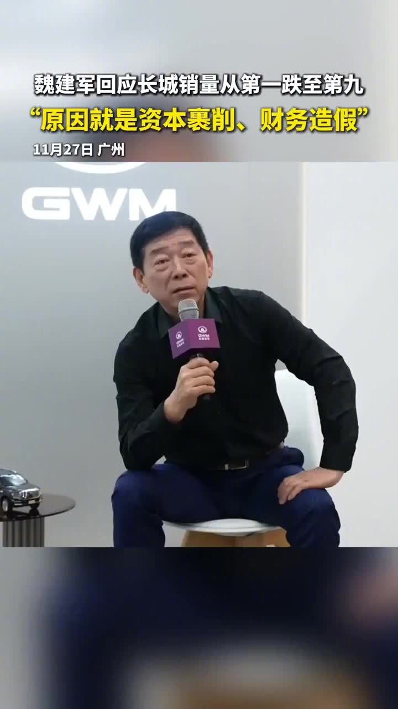

新闻 · 2026-11-28 12:00
魏建军回应“长城汽车销量从第一掉到第九”：内卷、资本裹挟、财务造假是主因
据IT之家报道，长城汽车董事长魏建军在广州车展回应销量排名从自主品牌第一下滑至第九，将主因归结为“内卷”“资本裹挟”和“财务造假”，并表示“我排到第九，但是我心里边很坦然”。他称长城不追求走量而追求单车价值，平均单车售价约18万元；2025年前10个月长城累计销量104.1万辆。

来源与核验
单一信源报道，未交叉核实
据IT之家报道，长城汽车董事长魏建军在广州车展回应销量排名从自主品牌第一下滑至第九，将主因归结为“内卷”“资本裹挟”和“财务造假”，并表示“我排到第九，但是我心里边很坦然”。他称长城不追求走量而追求单车价值，平均单车售价约18万元；2025年前10个月长城累计销量104.1万辆。

单一信源报道，未交叉核实